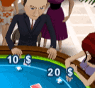
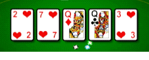

24 |
Regole di base |
 |
Texas Hold ’Em è un tipo di poker a carte comuni con quattro round di puntate. Uno dei giocatori è designato come mazziere (dealer). Questa posizione è anche detta button e si sposta in senso orario dopo ogni mano.
I due giocatori alla destra del mazziere, detti rispettivamente buio e controbuio, sono gli unici a puntare prima che le carte vengano distribuite.  Ogni giocatore riceve due carte coperte, dette hole card.
Il giocatore seduto alla sinistra del controbuio apre il primo round di puntate, seguito dagli altri giocatori in senso orario. Al termine del primo round di puntate, il mazziere scopre tre carte comuni, dette anche flop.
Il secondo round di puntate inizia dal primo giocatore ancora in gioco alla sinistra del button. Le puntate continuano in senso orario. Al termine del secondo round di puntate, viene scoperta una quarta carta comune, detta anche turn.
Il terzo round di puntate inizia dal primo giocatore ancora in gioco alla sinistra del button. Le puntate continuano in senso orario. Al termine del terzo round di puntate, viene scoperta una quinta carta comune, detta anche river.  Il quarto round di puntate inizia dal primo giocatore ancora in gioco alla sinistra del button. Le puntate continuano in senso orario. I giocatori devono combinare le proprie hole card con le carte comuni per formare la migliore mano di 5 carte. Per farlo, possono utilizzare entrambe le hole card, una sola delle hole card o nessuna di esse (usando solo le carte scoperte). La mano migliore si aggiudica il pot. Durante le partite online, i giocatori devono effettuare le proprie mosse entro un tempo limite, per non bloccare la partita. Nota: Per spingerti a lasciare, molti giocatori tenteranno di bluffare fingendo di avere una mano eccellente. Altri invece valuteranno le probabilità e aspetteranno una mano imbattibile. Per altri trucchi e consigli, accedi alla sezione "Consigli di gioco". |


 |
 |
 |